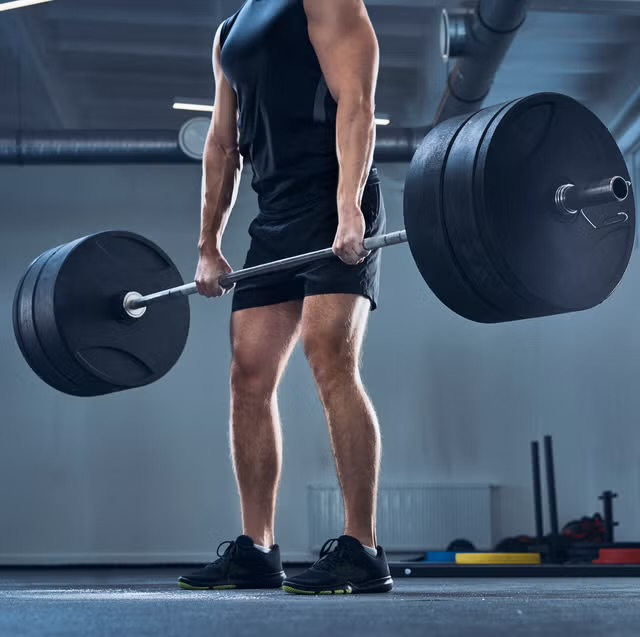
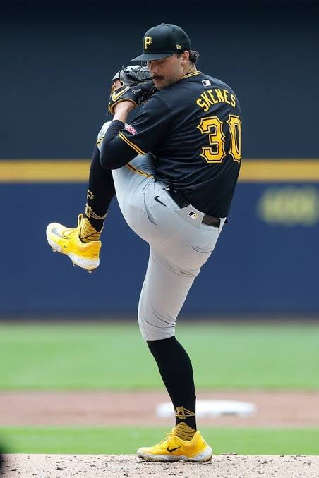
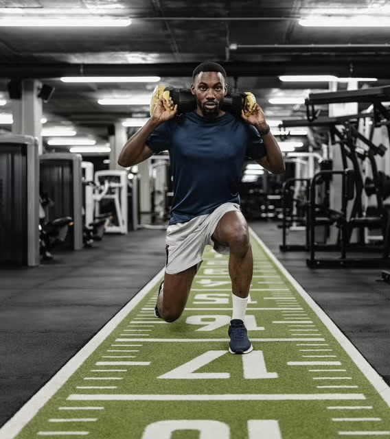

Welcome to my Strength & Conditioning Portfolio. This site serves as a collection of coursework, training concepts, research, and coaching philosophies developed throughout my education at Concordia University Nebraska. My goal is to continually learn how to improve athletic performance, reduce injury risk, and help athletes reach their full potential through evidence-based training.
Dynamic warm-ups, movement preparation, activation, and readiness training.
Improving movement quality, joint motion, and athletic durability.
Performance assessment and athlete monitoring strategies.
Strength development through progressive and structured programming.
Jump training and explosive power development.
Acceleration, deceleration, and change-of-direction training.
Building work capacity and sport-specific endurance.
Supporting adaptation, recovery, and performance through nutrition.
Developing confidence, focus, consistency, and resilience.
Sleep, hydration, recovery modalities, and fatigue management.
Return-to-play concepts and injury prevention.
Training modifications for unique athlete needs.
Prioritize movements involving multiple joints and muscle groups in all planes of motion.
Use hypertrophy, strength, power, and speed phases to build athletic performance.
Identify strengths and weaknesses and program according to athlete needs.
Develop force production through strength training, plyometrics, and medicine ball work.
Train speed, quickness, body awareness, rhythm, and movement efficiency.
Ensure gains from training transfer directly to competition and sport performance.
Improve movement quality while reducing injury risk and enhancing performance.
Prioritize sleep, nutrition, hydration, and strategic recovery periods.
Effort, discipline, accountability, consistency, and selflessness drive success.